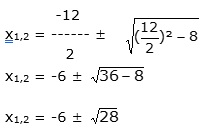
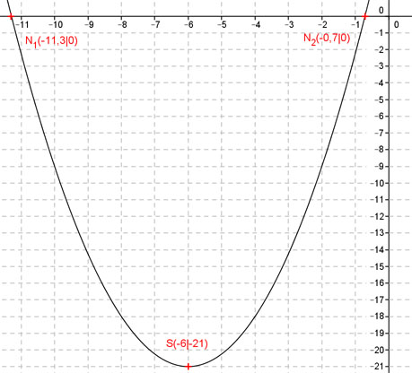

Aufgabe 66 Welche Koordinaten haben der Scheitelpunkt S und die Nullstellen N der Funktion 3 y = --- x2 + 9x + 6? 4 3 3 y = --- x2 + 9x + 6 |:--- 4 4 4 --- y = x2 + 12x + 8 3 Quadratische Ergänzung : 4 --- y = x2 + 12x + 36 – 36 + 8 3 mit x2 + 12x + 36 = (x + 6)2 4 3 --- y = (x + 6)2 - 28 |* --- 3 4 3 y = --- (x + 6)2 - 21 4 Dies ist die Scheitelpunktform. S abgelesen: S(-6|-21) Nullstellen: y = 0 3 3 0 = ---x2 + 9x + 6 |:--- 4 4 0 = x2 + 12x + 8 p, q – Formel : p = 12 ; q = 8  x1,2 = -6 ± 5,3 x1 = -6 – 5,3 = -11,3 x2 = -6 + 5,3 = -0,7 N1(-11,3|0) ; N2(-0,7|0) 